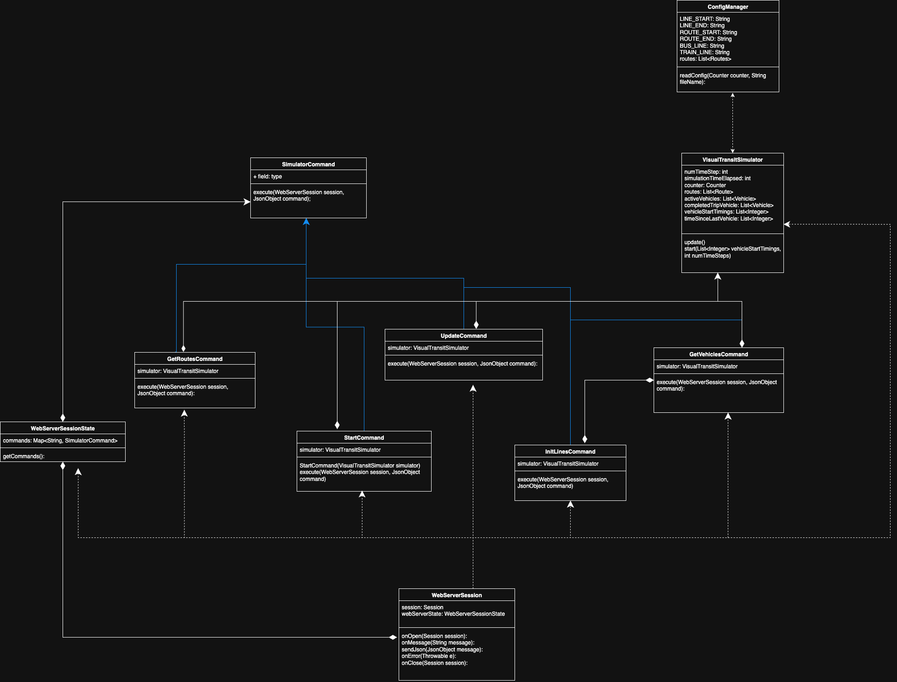

This is a visual transit simulator (VTS) modeling the UMN campus. The software simulates vehicles and passengers.
The simulation is divided into a visualization module and a simulator module.
<root>/app/src/main/webapp/web_graphics/<root>/app/src/main/java/edu/umn/cs/csci3081w/project and is split into model and webserver classes.The VTS software is ran in the browser and the user can configure the number of time units simulated and the rate new vehicles will be added to a route in the simulation. They can restart the simulation by reloading the browser tab.
The visualization module connects to the simulator via a websocket upon launch, triggering the simulator's WebServerSession.onOpen function. Afterwards the modules communicate with JSON messages. See <root>/app/src/main/webapp/web_graphics/sketch.js for the visualization modules sent messages and the WebServerSession.onMessage and WebServerSession.sendJson methods in the simulator module for its messages.
The simulation is configured in app/src/main/resources/config.txt. Each line is structured thusly:
LINE_START, BUS_LINE, Campus Connector
ROUTE_START, East Bound
STOP, Blegen Hall, 44.972392, -93.243774, .15
STOP, Coffman, 44.973580, -93.235071, .3
STOP, Oak Street at University Avenue, 44.975392, -93.226632, .025
STOP, Transitway at 23rd Avenue SE, 44.975837, -93.222174, .05
STOP, Transitway at Commonwealth Avenue, 44.980753, -93.180669, .05
STOP, State Fairgrounds Lot S-108, 44.983375, -93.178810, .01
STOP, Buford at Gortner Avenue, 44.984540, -93.181692, .01
STOP, St. Paul Student Center, 44.984630, -93.186352, 0
ROUTE_END
ROUTE_START, West Bound
STOP, St. Paul Student Center, 44.984630, -93.186352, .35
STOP, Buford at Gortner Avenue, 44.984482, -93.181657, .05
STOP, State Fairgrounds Lot S-108, 44.983703, -93.178846, .01
STOP, Transitway at Commonwealth Avenue, 44.980663, -93.180808, .01
STOP, Thompson Center & 23rd Avenue SE, 44.976397, -93.221801, .025
STOP, Ridder Arena, 44.978058, -93.229176, .05
STOP, Pleasant Street at Jones-Eddy Circle, 44.978366, -93.236038, .1
STOP, Bruininks Hall, 44.974549, -93.236927, .3
STOP, Blegen Hall, 44.972638, -93.243591, 0
ROUTE_END
LINE_END
LINE_START, BUS_LINE, Campus Connector Begins the definition of a bus line named Campus Connector.ROUTE_START, East Bound Is the header for the outbound route info block. The outbound route is always defined before the inbound route. ROUTE_START, West Bound Is the header for the inbound route info block.You must start the simulator module and then the visualization model to run the software.
./gradlew appRun from <root>. To stop, press enter in the terminal you started the module.
ps aux | grep gretty | awk '{print $2}' | xargs -L 1 kill in the terminal.http://localhost:7777/project/web_graphics/project.html in a browser. To stop, close its browser tab.Comments on the UML class diagram for model classes.

Comments on the UML class diagram for webserver classes.